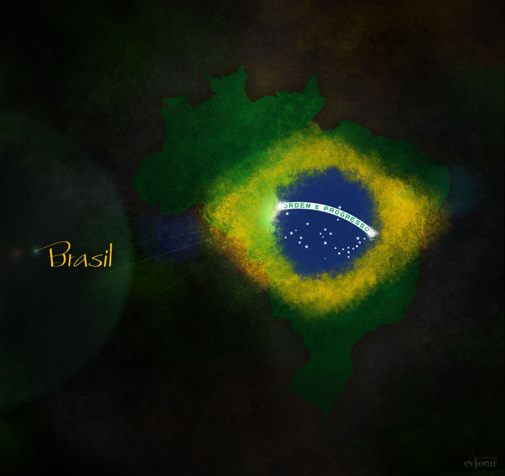

-
世界第一运动 足球运动是世界上第一的运动，它体现了运动中力量和速度的完美结合。它就像是自然界中的猎豹，它奔跑的速度、节奏、动感、力量以及舒展的线条都给人一种美的享受。这种美是力量之美、速度之美、灵性之美。因为是运动，也就被赋予了一种精神———竞技精神：公平公正，勇敢拼搏，积极进取，荣誉至上，争当胜者。这种足球精神应是足球魅力最核心的部分。在它的感召下，我们看到激情和技术随心所欲的挥洒，看到球迷为之癫狂，为之忘我的沉醉状态。 READ MORE
-
竞技精神代表 公平公正，勇敢拼搏，积极进取，荣誉至上，争当胜者。这种足球精神应是足球魅力最核心的部分。在它的感召下，我们看到激情和技术随心所欲的挥洒，看到球迷为之癫狂，为之忘我的沉醉状态。足球是圆的，恰恰表明它的不可预知性和颠覆性。在足球的世界里，一切不可能都皆有可能，一切的结果都可能大大出乎人们的预料之外，强者并非就一定是胜者，弱者也并非就一定是败者。足球之路如人生之路，充满了丰富的无限可能性，而且不到最后一刻，便不会看到它真正的面目。这应该是足球这项运动最引人入胜的地方。 READ MORE